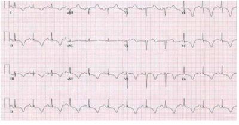
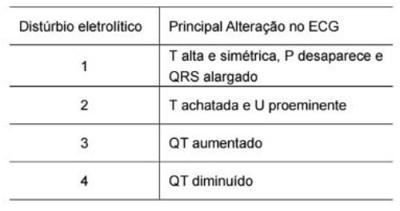

Questão 1 · Hiperparatireoidismo primário · Hipotireoidismo na gestação · 4000114919Hipocalcemia com Paratormônio PTH reduzido Quanto às doenças da tireoide e paratireoide na gravidez, pode-se afirmar que
A o hiperparatireoidismo primário na gestação é caracterizado pela diminuição dos níveis sanguíneos de paratormônio (PTH), causa comum de hipocalcemia na gestação.
B nas gestantes com hipertireoidismo, a determinação sérica dos anticorpos antirreceptores de hormônio estimulador da tireóide (TRAb) ao longo da gestação pode auxiliar na detecção do risco de hipotireoidismo neonatal.
C palpitações, ansiedade, tremores e intolerância ao calor são sintomas fraquentes de hipotiroidismo na gestação.
D as tionamidas como tiamazol, carbimazol e propiltiouracil (PTU) são drogas que não cruzam a barreira placentária e, por isso, são utilizadas no tratamento de hipertiroidismo na gestação.
E o tratamento do hipoparatireoidismo na gravidez consiste na reposição materna de cálcio e vitamina D podendo ser necessária também em alguns casos a reposição conjunta de magnésio.
Questão 2 · Tratamento · Hipocalcemia com Paratormônio PTH reduzido · 4000077117Mulher 60 anos apresentou hiperparatireoidismo primário. Em um primeiro momento, importantes comorbidades cardiovasculares impediram o seu tratamento cirúrgico, o que a levou a usar bifosfonados para controle de calcemia. Após a paratireoidectomia da glândula acometida, evoluiu com hipocalcemia, mantida, 10 dias depois, mesmo com três glândulas residuais íntegras, o que requer reposição de cálcio. Nesse caso, o tratamento e a possível causa da hipocalcemia podem estar relacionados, respectivamente, ao(à):
A cloro / fome óssea
B calcitriol / bifosfonados
C magnésio / osteoporose
D fosfato / doença adinâmica óssea
Questão 3 · Hipocalcemia com Paratormônio PTH reduzido · Manif estações clínicas da hipocalcemia · 4000101581Complicações Uma mulher, de 44 anos, no segundo dia de pós-operatório, apresenta queixas de dor e contratura muscular. No exame físico, os sinais de Chvostek e de Trousseau se apresentam positivos. A cirurgia realizada e o distúrbio ocasionado pela complicação cirúrgica são respectivamente:
A Nefrectomia e hipofosfatemia.
B Adrenalectomia e hipocalemia.
C Tireoidectomia e hipocalcemia.
D Pancreatectomia e hiponatremia.
Questão 4 · Hipocalcemia com Paratormônio PTH reduzido · 4000065411No paciente que após 1 (um) ano de pós-operatório de tireoidectomia total persiste com hipocalcemia. O diagnóstico principal a ser considerado é
A hiperparatireodismo transitório.
B hipoparatireoidismo transitório.
C hipoparatireoidismo permanente.
D hiperparatireoisdismo permanente.
E hipotireoidismo peramenente.
Questão 5 · Hipocalcemia · Complicações · 4000034987Mulher de 65 anos é trazida por sua lha à unidade de emergência confusa e desorientada, queixando-se de câimbras e formigamento nas mãos. Foi submetida à tireoidectomia por módulos há 2 dias. No exame físico, observam-se sinais de Chvostek e Trousseau. O achado eletrocardiográfico esperado neste caso é:
A Pré-excitação com onda Delta.
B Presença de onda U.
C Alargamento de intervalo QT.
D Inversão de onda T.
Questão 6 · Hipocalcemia com Paratormônio PTH reduzido · Manif estações clínicas da hipocalcemia · 4000032764Mulher de 55 anos é submetida à tireoidectomia total por câncer de tireoide e evolui com tetania, cãimbras, espasmo carpopedal e irritabilidade. Nesse contexto, qual das alterações abaixo NÃO É ESPERADA?
A Aumento da excreção urinária de cálcio.
B Aumento dos níveis séricos de fósforo sem elevação da fosfatase alcalina.
C Exacerbação dos sintomas na presença da hipomagnesemia.
D Redução do nível sérico do paratormônio e hipocalcemia.
Questão 9 · Investigação etiológica · 4000002409São causas de Hipocalcemia, EXCETO:
A Hiperparatiroidismo.
B Múltiplas transfusões sanguíneas.
C Pancreatite aguda.
D Sepse.
Questão 10 · Hipocalcemia · Tratamento · 4000128230Em relação às alterações do cálcio no organismo, assinale alternativa ERRADA:
A A hipocalcemia aguda geralmente é frequente após reanimação do choque
B A infusão de gluconato de cálcio não pode ser pela mesmo via da infusão de bicarbonato
C A síndrome da lise tumoral inclui entre outras alterações eletrolíticas a hipercalcemia
D Na hipocalcemia o tratamento com infusão de gluconato de cálcio por via venosa deve ser feito lentamente, pelo risco de parada cardíaca
Questão 11 · Hipocalcemia com Paratormônio PTH reduzido · 4000104207O quadro de Hipoparatireoidismo, é uma desordem rara causada por Secreção Insu ciente de Paratormônio (PTH), caracteriza-se por hiperfosfatemia e níveis circulantes indetectáveis ou inapropriadamente baixos de PTH. Assinale a alternativa INCORRETA:
A O hipoparatireoidismo resulta, mais frequentemente, de complicação cirúrgica envolvendo a região cervical anterior, sendo particularmente comum após tireoidectomia.
B Doenças autoimunes, genéticas, infiltrativas, irradiação, drogas e distúrbios do magnésio também podem cursar com hipoparatireoidismo.
C Os sintomas mais comuns, parestesias, cãibras, fraqueza muscular e mialgia, são causados pela hipercalcemia que acompanha essa desordem.
D Nos quadros mais graves, pode ocorrer espasmo carpo pedal, laringo espasmo, broncoespasmo, tontura e tetania espontânea.
Revisar: possível letra faltando em enunciado
Questão 12 · Complicações da DRC Doença Mineral e óssea · 4000098948Homem, 23a, refere dor no quadril e di culdade para andar há duas horas após crise convulsiva. Antecedentes pessoais: insu ciência renal crônica. Creatinina = 8,9 mg/dl; ureia = 194 mg/dl; cálcio = 4 mg/dl; fósforo = 6,2 mg/dl; fosfatase alcalina = 27 UI/dl; PTH = 488 pg/ml. Radiograma de pelve: fratura da cabeça do fêmur direito. O diagnóstico é:
A Hiperparatiroidismo primário.
B Osteomalácia por deficiência de vitamina D.
C Osteíte fibrosa por hipocalcemia.
D Osteodistrofia renal.
Questão 13 · Manif estações clínicas da hipocalcemia · 4000054626Os sinais de Chvostek (contração do muscúlo facial após leve estímulo na frente da orelha) e Trousseau (espasmo carpopedal apósinsuflação de manguito no braço acima dapressão sistólica) estão presentes nodistúrbio hidroeletrolítico:
A Hipernatremia
B Hipocalemia
C Hipocalcemia
D Hipercalemia
E Hipercalcemia
Questão 14 · Hipocalcemia com Paratormônio PTH reduzido · Manif estações clínicas da hipocalcemia · 4000022297Paciente submetida a tireoidectomia total por bócio volumoso evoluiu, no primeiro pós-operatório, com quadro de parestesia peri-oral com sinal de Chvostek presente e espasmos musculares. A causa provável e tratamento indicado para o quadro clínico apresentado são a
A hipocalcemia secundária a tireoidectomia e reposição com levotiroxina.
B hipocalcemia secundária a paratireoidectomia inadvertida e reposição com levotiroxina e cálcio oral domiciliar.
C hipocalcemia secundária a paratireoidectomia inadvertida e reposição imediata de cálcio endovenoso.
D hipocalcemia secundária a tireoidectomia e reposição oral de cálcio e levotiroxina.
Questão 15 · Hipocalcemia com Paratormônio PTH reduzido · Manif estações clínicas da hipocalcemia · 4000002214Endocrinologia Feminino, 43 anos, submetida a tireoidectomia total devido bócio multinodular atóxico, evoluindo no pós-operatório imediato com astenia, cãibras musculares, parestesias, mialgia. Qual a provável causa do quadro clínico apresentado?
A Hiperparatireoidismo pós-cirúrgico.
B Hipoparatireoidismo pós-cirúrgico.
C Hipotireoidismo pós-cirúrgico.
D Hipertireoidismo pós-cirúrgico.
Questão 16 · Tratamento · Complicações · 4000108222Paciente de 25 anos submetida à tireoidectomia total por doença de Graves. Procedimento cirúrgico sem intercorrências. No terceiro pós-operatório, a paciente procura o pronto-socorro com quadro de nervosismo e agitação, referindo mal- estar intenso e parestesias nas extremidades e na região perioral. Qual a suspeita clínica e a melhor conduta?
A Hipotireoidismo; iniciar levotiroxina.
B Crise tireotóxica; transferir a paciente para UTI e iniciar betabloqueadores.
C Transtorno ansioso; medicar com benzodiazepínico.
D Hipercalcemia; hidratação e diurético.
E Hipocalcemia; reposição com gluconato de cálcio.
Questão 17 · Tireoidectomia · Hipocalcemia · Manif estações clínicas da hipocalcemia · 4000098435Mulher, 45a, trazida ao pronto socorro por familiares devido confusão mental há 4 horas e episódio de convulsão tônico- clônica há 30 minutos. Antecedentes pessoais: nega uso de medicação. Exame físico: FC= 78 bpm, FR= 16 irpm, oximetria (ar ambiente)= 98%, PA= 134x78 mmHg, Pescoço: cicatriz cervical anterior com pontos,Neurológico: Escala de Coma de Glasgow: 15, sem déficit focal. Eletrocardiograma. A CONDUTA É: (Conforme imagem )

A Dosagem de enzimas cardíacas.
B Tomografia computadorizada de crânio.
C Dosagem de cálcio sérico.
D Observação em Pronto Socorro.
Questão 18 · Manif estações clínicas da hipocalcemia · Complicações · Investigação etiológica · 4000097109Paciente submetida à tireoidectomia total por doença de Graves possui como complicação precoce mais comum:
A crise mixedematosa
B hipoparatireoidismo transitório
C hematoma da ferida operatória
D lesão do nervo laríngeo recorrente
Questão 19 · Manif estações clínicas da hipocalcemia · 4000095623Um paciente com insu ciência renal grave apresentou parestesias periorais e de extremidades, espasmos em ambas as mãos, além que intervalo QT prolongado no eletrocardiograma. O distúrbio eletrolítico provavelmente presente nesse caso é:
A Hipermagnesemia.
B Hipomagnesemia.
C Hipercalcemia.
D Hipocalcemia.
Questão 20 · Hipocalcemia com Paratormônio PTH reduzido · Manif estações clínicas da hipocalcemia · 4000061618Em paciente com hipoparatiroidismo após tireoidectomia, pode-se observar:
A Bradicardia e bloqueio atrioventricular de 1º grau.
B Parestesias e aumento do limiar de excitação neuronal.
C Taquiarritmia e eletrocardiograma com intervalo QT diminuído.
D Convulsões e laringoespasmo.
Questão 21 · Hipocalcemia com Paratormônio PTH reduzido · Manif estações clínicas da hipocalcemia · 4000037507Paciente de 34 anos, submetida à tireoidectomia por suspeita de câncer na tireoide, refere adormecimento perioral. Encontra-se no primeiro dia de pós-operatório e está bastante ansiosa. É avaliada pelo médico que, ao realizar seu exame físico, encontra sinal de Chvostek levemente positivo. Qual o provável diagnóstico da paciente?
A Alcalose metabólica secundária à hiperventilação devido a ansiedade.
B Crise aguda de hipotireoidismo devido a retirada da glândula tireóidea desencadeada por estresse.
C Hipocalcemia devido a hipoparatireoidismo iatrogênico.
D Crise tireotóxica por manipulação da glândula.
Questão 22 · Hipocalcemia com Paratormônio PTH reduzido · Manif estações clínicas da hipocalcemia · 4000030768Mulher de 47 anos, eutró ca, relata fadiga crônica e cãibras nas mãos e pés. Faz tratamento com vitamina B12 para anemia pernciosa e levotiroxina para hipotireoidismo por tireoidite de Hashimoto. Ao exame, apresenta sinal de Chvostek. O cálcio sérico total é de 7,9 mg/dl e seu nível de fósforo de 4,1 mg/dl. A explicação MAIS PRÓVAVEL para o quadro apresentado é:
A Deficiência de vitamina D.
B Hipoparatireoidismo.
C Insulficiência renal crônica.
D Presença de hipoalbuminemia.
Revisar: possível letra faltando em enunciado
Questão 23 · Manif estações clínicas da hipercalemia · Distúrbios do potássio · Hipercalemia · 4000028595A tabela a seguir (conforme imagem do caderno de questões) mostra um resumo das alterações do ECG nos distúrbios eletrolíticos. Assinale a alternativa correta, correspondente, respectivamente, aos números 1, 2, 3 e 4.

A Hipopotassemia, hipocalcemia, hipercalcemia e hiperpotassemia.
B Hiperpotassemia, hipopotassemia, hipocalcemia e hipercalcemia.
C Hipercalcemia, hiperpotassemia, hipopotassemia e hipocalcemia.
D Hipopotassemia, hipocalcemia, hiperpotassemia e hipercalcemia
E Hipocalcemia, hiperpotassemia, hipopotassemia e hipercalcemia.
Questão 24 · Manif estações clínicas da hipocalcemia · Investigação etiológica · 4000109314Um paciente de 68 anos, portador de hipertensão arterial e insu ciência cardíaca, está sendo tratado com furosemida 40 mg 2 comprimidos às 8 e às 14 horas, hidroclorotiazida 50 mg pela manhã, espironolactona 25 mg pela manhã, captopril 50 mg 8/8h e carvedilol 12,5 mg 12/12h. Seus exames recentes mostram Na = 136 mEq/L; K =2,1 mEq/L; ureia = 64 mg/dL; creatinina = 1,4 mg/dL e gasometria arterial: pH = 7,58; pCO2 = 51 mmHg; pO2= 88 mmHg; HCO3 = 38 mEq/L; BE = +10; SO2 = 94%. Caso o paciente da questão, estivesse com contratura de extremidades e trismo mandibular, qual alteração eletrolítica seria responsável por este distúrbio e como corrigi-la?
A Hipomagnesemia que poderá ser corrigida com administração de sulfato de magnésio IV.
B Hipocloremia que poderá ser corrigida com soro fisiológico (NaCl a 0,9%) IV e correção da alcalose.
C Hipocalcemia (cálcio iônico) que será corrigido com a oferta de cálcio IV e correção da alcalose.
D Hipopotassemia que seria normalizada apenas com a correção da alcalose.
Questão 25 · Manif estações clínicas da hipocalcemia · Endocrinologia · 4000011833Paciente feminina, primeiro pós-operatório de tireoidectomia por suspeita de câncer de tireoide, encontra-se bastante ansiosa e referindo adormecimento perioral. O médico faz o sinal de Chvostek que é francamente positivo. Qual o diagnóstico dessa paciente?
A Hipocalcemia devido a hipoparatireoidismo iatrogênico.
B Crise tireotóxica devido manipulação da glândula tireoide.
C Transtorno de ansiedade generalizado com alcalose devido hiperventilação.
D Hipotireoidismo agudo devido a reposição ineficiente dos hormônios tireoideanos
Questão 26 · Hipocalcemia com Paratormônio PTH reduzido · Complicações · 4000099950A causa mais comum de hipoparatireoidismo é:
A A queda do fósforo no pós-operatório de tireoidectomia.
B A neoplasia endócrina múltipla – NEM 1.
C A manipulação das paratireoides durante tireoidectomia.
D Deficiência de vitamina D, que aumenta a secreção do PTH.
Questão 27 · Distúrbios do cálcio · 4000044329Quanto ao manejo do cálcio, é correto afirmar:
A Para encontrar o Cálcio iônico real, deve-se multiplicar o Cálcio Sérico Total pelo resultado de [0,8 x (4,0 - albumina sérica)].
B O Sinal de Trosseau ocorre na hipocalcemia e é caracterizado pelo espasmo carpopedal após manter insuflado o manguito de pressão arterial por 3 minutos.
C O hipoparatireoidismo primário é a principal causa de hipercalcemia.
D A Intoxicação por vitamina D não é causa de hipercalcemia.
E No tratamento da hipercalcemia em casos graves, não deve hidratar por via endovenosa.
Questão 28 · Manif estações clínicas da hipocalcemia · 4000002212Qual é a manifestação clínica MAIS comum da Hipocalcemia?
A Tetania.
B Parestesia.
C Coma.
D Insuficiência renal.
Questão 29 · Hipocalcemia com Paratormônio PTH reduzido · 4000048234Feminina, 40 anos, admitida por astenia, mialgia leve e transtorno depressivo prévio. Traz exames feitos recentemente que mostram: anemia leve, hipocalcemia, hiperfosfatemia, paratormônio baixo, vitamina D em níveis normais, hormônio tireotrófico levemente aumentado, com T4 livre normal. O diagnóstico mais provável para esta paciente é:
A Hipertireoidismo primário.
B Hiperparatireoidismo primário.
C Hipoparatireoidismo primário.
D Hipermagnesemia.
E Insuficiência relativa de vitamina D.
Questão 30 · Hipocalcemia · 4000000957São causas de hipocalcemia, exceto:
A Sepse;
B Pós-operatório;
C Pancreatite aguda;
D Hiperparatireoidismo;
E Lise tumoral.
Questão 31 · Tratamento · Manif estações clínicas da hipocalcemia · 4000019230Paciente no 2º dia de pós-operatório de tireoidectomia total por bócio multinodular apresentou crise leve de laringo espasmo. Ao exame clínico, constata-se a presença de sinal de Chvostek e de Trousseau. O eletrocardiograma revela prolongamento no segmento Q-T. Qual a melhor opção terapêutica inicial?
A Gluconato de cálcio.
B Sulfato de magnésio.
C Hidralazina.
D Broncodilatador inalatório e corticoide endovenoso.
E Bicarbonato de sódio
Questão 32 · Tratamento nas crianças e adolescentes · 4000013043Lactente apresenta diarreia aguda, desidratação de terceiro grau e acidose metabólica importante. No pronto-socorro é iniciada expansão com soro siológico e, posteriormente, correção da acidose com bicarbonato de sódio. Durante a infusão de bicarbonato, a criança apresenta crise convulsiva tônico-clônica. Qual é o distúrbio eletrolítico/metabólico mais provável como desencadeador da crise?
A Hipocalcemia.
B Hipocalemia.
C Hiponatremia.
D Hipernatremia.
E Alcalose metabólica.
Questão 33 · Investigação etiológica · 4000076375A mais comum causa de hipocalcemia total no soro é:
A Hipoalbuminemia;
B Alcoolismo;
C Pancreatite crônica;
D Má absorção intestinal.
Questão 34 · Hipocalcemia com Paratormônio PTH reduzido · Manif estações clínicas da hipocalcemia · 4000035079D.F.K., 42 anos, sexo feminino, doméstica, foi submetida à tireoidectomia total com esvaziamento cervical para tratamento de tumor maligno da tireoide. No pós-operatório imediato, apresentou parestesias nas extremidades e lábios, acompanhados de cãibra, mal-estar e contraturas tetânicas. A dosagem de cálcio foi de 1,00 mmol/L (Referência 1,10 mmol/L a 1,35 mmol/L). Em relação a este caso, assinale a afirmativa ERRADA:
A A compressão por manguito de esfignomanômetro em membro superior deve determinar contração espasmódica da musculatura do membro.
B É de se esperar que com a percussão do tronco do nervo facial ocorra contração da face ipsilateral.
C O PTH (hormônio paratireoidiano) deve estar elevado.
D O tratamento na fase aguda desta complicação deve ser pela administração venosa de gluconato de cálcio.
Questão 35 · Hipocalcemia com Paratormônio PTH reduzido · Manif estações clínicas da hipocalcemia · 4000034356Mulher de 47 anos, eutró ca, relata fadiga crônica e cãibras nas mãos e pés. Faz tratamento com vitamina B12 para anemia perniciosa e levotiroxina para hipotiroidismo por tireoide de Hashimoto. Ao exame apresenta sinal de Chvostek. O cálcio sérico total é de 7,9 mg/dl e seu nível de fósforo de 4,1 mg/dl. A explicação mais provável para o quadro apresentado é:
A Deficiência de vitamina D.
B Hipoparatireoidismo.
C Insuficiência renal crônica.
D Presença de hipoalbuminemia.
Revisar: possível letra faltando em enunciado
Questão 36 · Intervalo QT · Hipocalcemia com Paratormônio PTH reduzido · Manif estações clínicas da hipocalcemia · 4000022882Mulher de 60 anos, em primeiro dia pós-operatório de tiroidectomia total, apresenta agitação na enfermaria. Ao ser abordada, a paciente encontra-se alerta, porém com desorientação espacial e alucinações visuais (descrevia animais e monstros circulando seu leito). A cicatriz cirúrgica estava limpa. Ao aferir a pressão arterial da paciente, observa-se intenso espasmo carpal. Não havia outros achados no exame físico. Qual alteração deve estar presente no eletrocardiograma desta paciente?
A Alargamento do QRS.
B Aumento do intervalo PR.
C Elevação do segmento ST.
D Prolongamento do intervalo QT.
Questão 37 · Hiperparatireoidismo primário · Hipocalcemia com Paratormônio PTH reduzido · 4000118189É correta a comparação entre os achados clínicos e laboratoriais dos distúrbios das paratireoides:
A Hiperparatireoidismo - tetania / Hipoparatireoidismo - osteoporose.
B Hiperparatireoidismo - catarata / Hipoparatireoidismo - poliúria.
C Hiperparatireoidismo - calcificações intracranianas / Hipoparatireoidismo - obstipação intestinal.
D Hiperparatireoidismo - nefrolitíase / Hipoparatireoidismo - sinal de Chvostek.
E Hiperparatireoidismo - parestesias / Hipoparatireoidismo - encurtamento do intervaloQTc.
Questão 38 · Manif estações clínicas da hipocalcemia · Investigação etiológica · 4000076833Mulher de 50 anos, com transtorno ansioso-depressivo em acompanhamento clínico há longa data, foi submetida à tireoidectomia. No pós-operatório apresenta cãibras e parestesias que evoluem para quadro convulsivo. Neste caso, o raciocínio causal e probabilístico orienta que se trata de:
A Hiperparatireoidismo, resultado do manuseio cirúrgico. Deve ser solicitada, de imediato, dosagem do PTH e cálcio sérico.
B Hipoparatireoidismo, resultado do manuseio cirúrgico. Deve ser iniciada, de imediato, reposição de cálcio, via endovenosa.
C Hipopotassemia aguda, pelo manuseio peroperatório. Deve ser iniciada, de imediato, reposição de potássio, via endovenosa.
D Quadro conversivo em paciente com transtorno mental. Deve ser iniciado, de imediato, benzodiazepínico endovenoso.
Questão 39 · Hiperparatireoidismo primário · Intervalo QT · Hipocalcemia com Paratormônio PTH reduzido · 4000064934Uma paciente feminina, 42 anos, com diagnóstico de hiperparatireoidismo primário, foi submetida a tratamento cirúrgico com sucesso. Porém, no pós-operatório imediato, evoluiu com o quadro conhecido como fome óssea. Quais alterações eletrocardiográficas espera-se encontrar nesse caso?
A Intervalo QT normal e supradesnível ST.
B Intervalo QT diminuído.
C Fibrilação atrial aguda.
D Intervalo QT aumentado, BAVT e fibrilação ventricular.
E Nenhuma alteração eletrocardiográfica é esperada.
Questão 40 · Doença de Graves · Hipotireoidismo · Hipocalcemia · 4000021145Todas as afirmativas estão corretas exceto:
A Na tireoidite de Hashimoto encontra-se níveis elevados de anticorpos circulantes antitireoglobulina.
B A tireoidite de Hashimoto é mais frequente no período da adolescência, no sexo masculino.
C A síndrome de DiGeorge caracteriza-se por hipoparatireoidismo congênito, aplasia tímica e anomalias cardíacas.
D Hipocalcemia é comum nas primeiras horas de vida, principalmente em prematuros.
E A tríade clássica da doença de Graves inclui bócio, exoftalmia e hipertireoidismo.
Questão 41 · Intervalo QT · Manif estações clínicas da hipocalcemia · 4000016506Considerando os distúrbios que ocorrem no balanço hidreletrolítico, julgue o próximo item. Em um paciente que apresente tetania, laringoespasmo, sinais de Chevostek e Trousseau e eletrocardiograma com intervalo QT prolongado, deve-se suspeitar de hipercalcemia grave.
A Certo.
B Errado.
Questão 42 · Paratormônio PTH · Magnésio · Hipocalcemia com Paratormônio PTH reduzido · 4000063702Que deficiência dos eletrólitos, abaixo, resulta em um hipoparatiroidismo transitório?
A Magnésio.
B Fósforo.
C Potássio.
D Zinco.
Questão 43 · Investigação etiológica · 4000057705São causas de hipocalcemia crônica, EXCETO:
A hipoparatireoidismo.
B deficiência de vitamina D.
C pseudodeficiência de vitamina D.
D pancreatite aguda.
Questão 44 · Outras causas · Hipocalcemia com Paratormônio PTH elevado · 4000035672Nas situações clínicas abaixo, encontra-se hipocalcemia com fósforo sérico diminuído, EXCETO:
A na acidose tubular renal.
B no uso de anticonvulsivantes.
C no hipotireoidismo.
D no raquitismo resistente.
Questão 45 · Investigação etiológica · Introdução e etiologia · Introdução e etiologia · 4000081390Quanto a fatores relacionados com distúrbios hidroeletrolíticos frequentes, relacione a coluna I com a coluna II e indique a alternativa correta: coluna I (1) hipocalemia. (2) hipocalcemia. (3) hipercalcemia. (4) hipomagnesemia. (5) hiperfosfatemia. coluna II (a) carcinoma de pulmão metastático. (b) vômitos. (c) pancreatite aguda. (d) morte celular - necrose tumoral. (e) alcoolismo - inanição. Respostas: 1 12 23 34 45
A 3a - 1b - 2c - 5d - 4e.
B 3a - 1b - 4c - 5d - 2e.
C 2a - 4b - 3c - 1d - 5e.
D 5a - 3b - 4c - 2d - 1e.
E 4a - 5b - 1c - 3d - 2e.